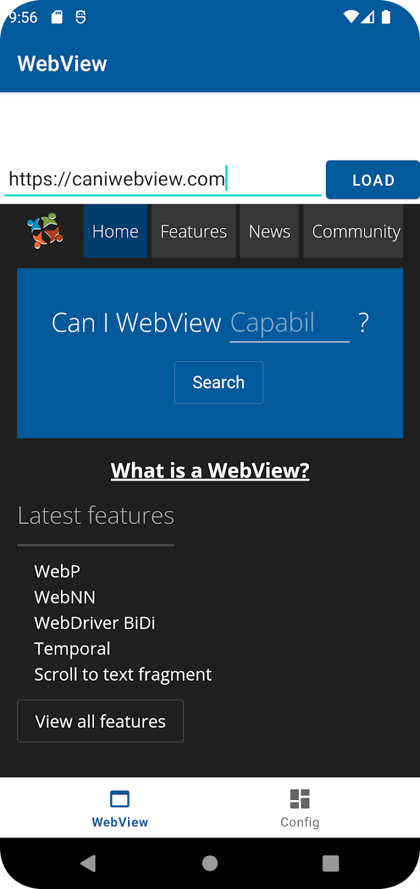

class: center, middle # State of WebViews - Can we fix things? ## Niklas Merz #### W3C WebView Community Group & Apache Cordova ??? * **Maintainer of Apache Cordova which uses WebViews for cross platform mobile apps** * Chair of the W3C WebView Community Group * *Who has used WebViews?* * *Who has ever thought about WebViews at all?* --- # Agenda 1. What is a WebView? 1. Why do I care about WebViews 1. Why you should care about WebViews 1. The State of WebViews 1. Documentation and Tooling 1. Testing the new contender - Servo in Apache Cordova 1. The future: AI? Mini apps? 1. Questions ??? * Overview of the next few minutes * Catch you up on WebViews * Think about the future of WebViews --- # What is a WebView? [W3C WebView Community Group](https://www.w3.org/community/webview/) > Software components that are used to render Web technology-based content outside of a Web browser (Native Apps, MiniApps, etc). [User Agent finding from W3C TAG](https://w3ctag.github.io/user-agents/#ua-as-software) > As software components, user agents can be parts of larger applications and can call libraries that implement the web platform or parts of it. ??? * WebView Community Group at W3C * Long discussion on specifics * Essentially embedding of web content in native apps --- class: center, middle # [Types of WebViews](https://webview-cg.github.io/usage-and-challenges/#types-of-webviews) Fully fledged Browser-like ??? * Defined in our useage and challenges Reporting * Criteria: UX flexibility, access to web content, state sharing --- # Android WebView <p></p> ??? * Native app UI on top * Just a rendering view * App can mess with the content through webview apis --- # Android Custom Tab  ??? * Brings UI * Can share state with browser * More reliably used for browsing --- # What else is different from browsers? * They sit beween native and web land * Extra considerations required! * Not part of web platform tests and interop ??? * Developed by native teams AFAIK * More security and compat considerations * Not part of interop, yearly browser planning --- # Why do I care about WebViews? * App developer * Cordova Hacker * Cordova Maintainer * WebView Community Group Member * WebView Community Group Chair ??? * Got in touch with WebViews many years ago * Got to solve some interesting challenges with them * They never let me go * With the WebView CG I see opportunities to make a difference --- # Why you should care about WebViews > WebViews are more than just a bridge between native and web. They are a critical component of many digital user experiences today. https://blog.merzlabs.com/posts/care-about-webviews/ * In-app-browsing * MiniApps * A true cross platform enabler ??? * Critical component for many apps you might use * Easily used without noticing * Exposed to security risks * In app browsing * Mini apps * The web is the best cross platform technology we have --- # State of WebViews * Mobile WebViews * Android WebView, iOS WKWebView and more * **Mini apps** * Hybrid: Apache Cordova, Capacitor etc. * Desktop WebViews * Microsoft Edge WebView2 * macOS WKWebView * Linux WebViews (WebKitGTK, QtWebEngine) * Hybrid: Electron, Tauri * ...more embedding of the web ??? * Lots of different WebViews out there * Very different use cases and capabilities * Some are for browser like experiences * Some are for building apps or parts of apps * **Fragmentation is a big issue** * **webviews are provided by the OS and just used by apps or frameworks** --- # Pain points for developers * Inconsistent support for web features * Platform-specific APIs that basically do the same thing differently * Loading files from the app bundle * Cookie handling * Permissions ??? * Reason for forming the CG * **Difference in behavior and support for web features** * native APIs * hard to find out support for new features or nuances of the web --- # Custom scheme vs Asset handler ### Special Origins You can't use file:// these days, right? > https://blog.merzlabs.com/posts/webview-history/ ??? * The example I always bring up * Coming from using a using a framework like React, Angular or Vue with Cordova * use apis from WebView to load local files --- ### Android - WebViewAssetLoader - Register domains - https://appassets.androidplatform.net/ - https://mydomain.com - Intercept GET & path ### iOS - WKURLSchemeHandler - Register custom URL schemes, e.g. app:// - myapp://appcontent - Intercept GET & POST ??? * Good example of platform-specific APIs that do the same thing differently * I spent many hours working finding solutions for problems this caused * Boring for most of you, no details --- # caniwebview.com ### A place for behavioral docs and web feature support * Writing behavioral docs is hard * We still need to gather more information ??? * We started the idea of caniwebview with writing down behavioral disucssions * Then also figured out we can easily track web feature support but it's not displayed anywhere * Focus on web features now * Need help for behavioral docs later --- # A clear picture <img src="img/webview/caniwebview-baseline.png" style="max-width: 100%; height: auto;" alt="Screenshot caniwebview.com/baseline"> ??? * A big reason for the community group is to draw a clear picture * **web-features earlier today is the one thing thats ready today** * we worked with the team to bring data to webview * **caniwebview is just a place to show and experiment today** * Looking at web feautures helps us get a picture of where **issues in the web portion** are * started with BCD data which is too granular * Once we have good data we can start working with doc sites and shut the page down * Great help from Google team on baseline and openwebdocs --- # Documentation and Tooling * Baseline, web-features * Browser compat data (BCD) * [caniwebview.com/baseline](https://caniwebview.com/baseline) * Testing Apps -> [caniwebview.com/apps](https://caniwebview.com/apps) ??? * Central place to find info on WebView information * Published apps useful for checking things in webviews * Work towards Baseline for WebViews * Plans for automated testing --- # Servo - The new contender > Servo aims to empower developers with a lightweight, high-performance alternative for embedding web technologies in applications. From servo.org <!----> ??? * Current webviews are based on big engines by OS vendors * Time to look at alternatives * servo had a hard start but gaining more traction recently * **Recently set focus on embedding which makes it perfect for WebViews** --- # Testing Servo in Apache Cordova * Servo is easy to add to an Android app! * ServoView lacks features other WebViews have * Custom scheme or asset loader * Evaluate JavaScript * Cookie store * First make it work without any Servo modifications * Then work with Servo team to build a proper integration ??? * Thanks to some funding and guidance from NGI Mobifree fund by NLnet I got to work on bringing Servo to Cordova. * Android at least * Cordova back in the day had Crosswalk * I've started a plugin that shows it works * Notice quickly where servo lacks support for web features * Lack of APIs Cordova needs * plugin bridge and javascript evaluation * First make it work without any Servo modifications * continue working with the Servo team --- # The Future of WebViews **Fixing WebViews, improves more than you think** * Security for browsing use * Solving Mini App fragmentation? * AI-powered apps? ??? * Fixing WebViews helps mini apps and more * AI is everywhere these days * Not sure if it stays in focus forever * **Embedding web component in AI usage** * No expert there but another current topic why webviews are important --- # Can we fix things? * I'm not sure but hopeful * It's hard to change existing WebViews without breaking things * **Documentation, tooling and alternatives** * Standards are a distant goal ??? * **It's hard to change existing WebViews without breaking things** * Vendors are moving carefully and have little interest in the standards overhead today * Documentation, tooling and alternatives are a good start to show whats possible * Join the W3C WebView Community Group * Being independent is an interesting position --- # We need help! * Reporting challenges and issues * Writing behavioral docs * Building WebView APIs for Servo ??? * Writing about WebView issues * Writing docs * Joining discussions in the CG * Bring new ideas * Support Servo for WebViews --- class: center, middle # The open questions Any new issues and uses cases not considered, yet? Could Servo be a viable replacement for what we have today? Is there a path to standardization? ??? * Let us know * **New APIs and Java bindings, iOS?** STICKERS!! * What could create interest in standardization * Business values for standards and WebViews? --- .left-column[ ## Thanks! ] .right-column[ This presentation: https://niklas.merz.dev/talks/state-of-webviews ]